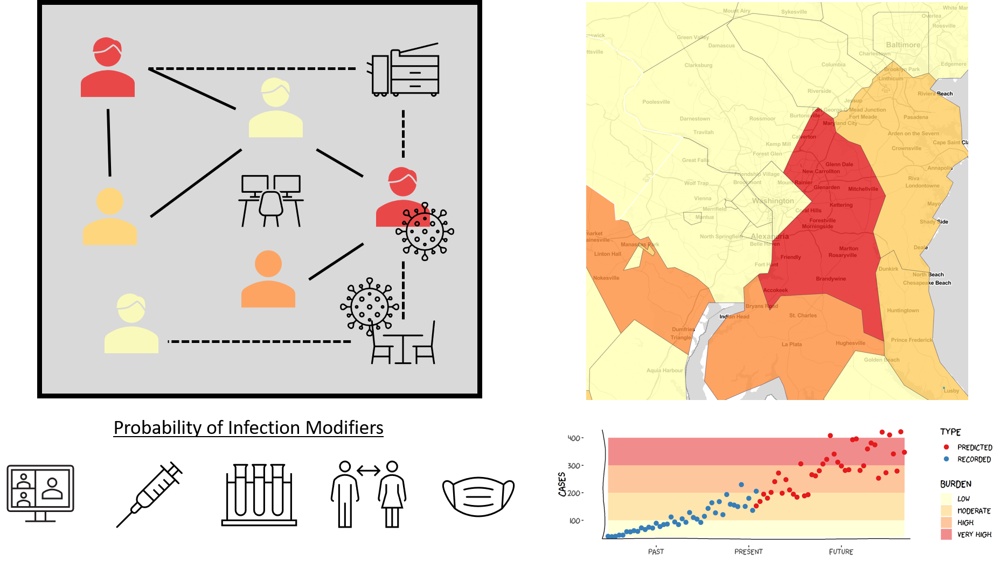
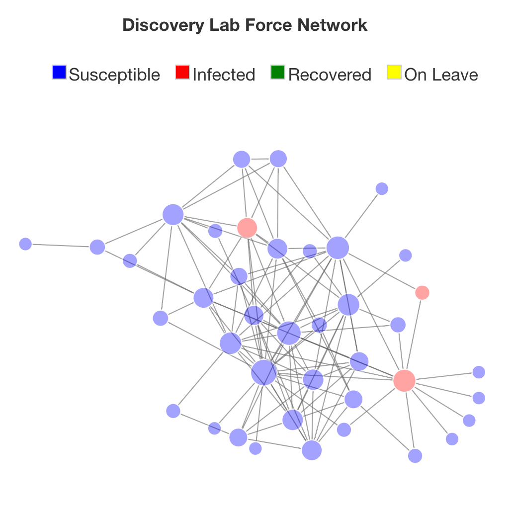

Integrating COVID-19 Models at Different Scales for Infection Risk Estimation and Control Optimization
Collin Schwantes, Benno Lee PhD, Marjorie Willner PhD, Ben Ortiz, Viveca Pabon-Harr PhD
Introduction

The system is complex
- Processes are non-linear
- Policies outside your institution impact outcomes in your institution
- Systems within your institution interact in unexpected ways
SARS-COV-2 Transmission
- Presence of infectious individuals or materials
- Inhalation of infectious particles
- Introduction of fomites to mucus membranes
Hazard Controls

Image produced by University of California Davis
Vaccination
- Protects from severe disease
- May not prevent transmission
Problem Statement
Assessing risk of SARS-COV-2 infection in indoor spaces is complicated because interactions at multiple spatial and temporal scales influence fine scale disease transmission.
Simulation Framework
An extensible simulation engine accepts modules that modify transmission dynamics.
Model layers
- External Transmission
- Environmental Transmission
- Direct Contact Transmission
- Transmission Modifiers
Extended SIR Model
Infectiousness Profile

Estimating external infections
[get explanation/figure from trevor]
Probability of infection estimated from a micro mcmc model - work was presented early today by Trevor Kent and Heather Pastolic.
Uses case counts back estimated from deaths and mobility data derived from cell phone data to determine the probability of infection in a given location.
We use that probability of infection to generate external infections while simulants are outside of their office space.
Estimating Environmental infections
Emission Rate \[ {ER_{q,j} = c_v*c_i*IR*\sum_{i=1}^4(N_{i,j}*V_i)} \]
Viral Concentration in Room \[ {n(t) = \frac{ER_q*I}{IVRR*V}+(n_o+\frac{ER_q*I}{IVRR})*\frac{e^{IVRR*t}}{V}} \]
Risk of Infection \[ {R_{env} = 1-e^{-IR\int_0^Tn(t)dt}} \]
Estimating direct contact infections
\[ R_{j}=\sum\limits_{i=1}^nI_{i}\delta_iP_{dc} \] \(I_{i}\) = relative infectiousness of adjacent infected nodes
\(\delta_i\) = transmission modifiers \(P_{dc}\) = probability of infection given direct contact
Hazard Control modules
- Leave Policy - removes individuals who tested positive for a number of time steps
- Room Density Limits - reduces number of people in a room
- Personal Protective Equipment - reduces the probability of acquiring infection
- Testing - does not directly impact transmission but may inform other policies (e.g. leave)
Data Collection

- Survey of contact with lab mates (n=46)
- Took mean of reported contact
- Estimated room volumes from blueprints